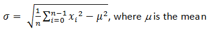
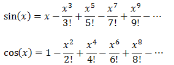
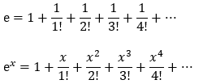
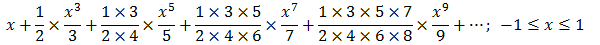

You need to do these exercises by yourself. Please don't ask me for solutions!
Writing Good Programs
The only way to learn programming is program, program and program. Learning programming is like learning cycling, swimming or any other sports. You can't learn by watching or reading books. Start to program immediately. (On the other hands, to improve your programming, you need to read many books and study how the masters program.)
It is easy to write programs that work. It is much harder to write programs that not only work but also easy to maintain and understood by others – I call these good programs. In the real world, writing program is not meaningful. You have to write good programs, so that others can understand and maintain your programs.
Pay particular attention to:
- Coding Style:
- Read "Java Code Convention" (@ http://www.oracle.com/technetwork/java/codeconvtoc-136057.html or google "Java Code Convention").
- Follow the Java Naming Conventions for variables, methods, and classes STRICTLY. Use camel-case for names. Variable and method names begin with lowercase, while class names begin with uppercase. Use nouns for variables (e.g.,
radius) and class names (e.g.,Circle). Use verbs for methods (e.g.,getArea(),isEmpty()). - Use Meaningful Names: Do not use names like
a,b,c,d,x,x1,x2, andx1688. Avoid single-alphabet names likei,j,k. They are easy to type, but usually meaningless. Use single-alphabet names only when their meaning is clear, e.g.,x,y,zfor co-ordinates andifor array index. Use meaningful names likerowandcol(instead ofxandy,iandj,x1andx2),numStudents,maxGrade,size, andupperbound. Differentiate between singular and plural nouns (e.g., usebooksfor an array of books, andbookfor each item). - Use consistent indentation and coding style. Many IDEs (such as Eclipse/NetBeans) can re-format your source codes with a click.
- Program Documentation: Comment! Comment! and more Comment!
Exercises on Flow Controls
Exercises on Conditional (Decision)
Exercise CheckPassFail (if-else): Write a program called CheckPassFail which prints "PASS" if the int variable "mark" is more than or equal to 50; or prints "FAIL" otherwise. The program shall always print “DONE” before exiting.
Hints:
/* * Trying if-else statement. */ public class CheckPassFail { // Save as "CheckPassFail.java" public static void main(String[] args) { // Program entry point int mark = 49; // Set the value of "mark" here! System.out.println("The mark is " + mark); if ( ...... ) { System.out.println( ...... ); } else { System.out.println( ...... ); } System.out.println( ...... ); } }
Take note of the source-code indentation!!! Whenever you open a block with '{', indent all the statements inside the block by 3 or 4 spaces. When the block ends, un-indent the closing '}' to align with the opening statement.
Exercise CheckOddEven (if-else): Write a program called CheckOddEven which prints "Odd Number" if the int variable “number” is odd, or “Even Number” otherwise. The program shall always print “BYE!” before exiting.
Hints: n is an even number if (n % 2) is 0; otherwise, it is an odd number.
/* * Trying if-else statement and modulus (%) operator. */ public class CheckOddEven { // Save as "CheckOddEven.java" public static void main(String[] args) { // Program entry point int number = 49; // Set the value of "number" here! System.out.println("The number is " + number); if ( ...... ) { System.out.println( ...... ); } else { System.out.println( ...... ); } System.out.println( ...... ); } }
Exercise PrintNumberInWord (nested-if, switch-case): Write a program called PrintNumberInWord which prints "ONE", "TWO",... , "NINE", "OTHER" if the int variable "number" is 1, 2,... , 9, or other, respectively. Use (a) a "nested-if" statement; (b) a "switch-case" statement.
Hints:
/* * Trying nested-if and switch-case statements. */ public class PrintNumberInWord { // Save as "PrintNumberInWord.java" public static void main(String[] args) { int number = 5; // Set the value of "number" here! // Using nested-if if (number == 1) { System.out.println( ...... ); } else if ( ...... ) { ...... } else if ( ...... ) { ...... ...... } else { ...... } // Using switch-case switch(number) { case 1: System.out.println( ...... ); break; // Don't forget "break" case 2: System.out.println( ...... ); break; ...... ...... default: System.out.println( ...... ); } } }
Exercise PrintDayInWord (nested-if, switch-case): Write a program called PrintDayInWord which prints “Sunday”, “Monday”, ... “Saturday” if the int variable "day" is 0, 1, ..., 6, respectively. Otherwise, it shall print “Not a valid day”. Use (a) a "nested-if" statement; (b) a "switch-case" statement.
Exercises on Loop (Iteration)
Exercise SumAndAverage (Loop): Write a program called SumAndAverage to produce the sum of 1, 2, 3, ..., to 100. Also compute and display the average. The output shall look like:
The sum is 5050 The average is 50.5
Hints:
/* * Compute the sum and average of running numbers from a lowerbound to an upperbound using loop. */ public class SumAndAverage { // Save as "SumAndAverage.java" public static void main (String[] args) { int sum = 0; // Store the accumulated sum, init to 0 double average; // average in double int lowerbound = 1; // The lowerbound to sum int upperbound = 100; // The upperbound to sum // Use a for-loop to sum from lowerbound to upperbound for (int number = lowerbound; number <= upperbound; ++number) { sum += number; // same as "sum = sum + number" } // Compute average in double. Beware that int/int produces int. ...... // Print sum and average. ...... } }
Try:
- Modify the program to use a "while-do" loop instead of "for" loop.
int number = lowerbound; int sum = 0; while (number <= upperbound) { sum += number; ++number; } - Modify the program to use a "do-while" loop.
int number = lowerbound; int sum = 0; do { sum += number; ++number; } while (number <= upperbound); - What is the difference between "for" and "while-do" loops? What is the difference between "while-do" and "do-while" loops?
- Modify the program to sum from 111 to 8899, and compute the average. Introduce an
intvariable calledcountto count the numbers in the specified range.int count = 0; // count the number within the range, init to 0 for ( ...; ...; ... ) { ...... ++count; } - Modify the program to sum only the odd numbers from 1 to 100, and compute the average. (HINTS:
nis an odd number ifn % 2is not0.) - Modify the program to sum those numbers from 1 to 100 that is divisible by 7, and compute the average.
- Modify the program to find the "sum of the squares" of all the numbers from 1 to 100, i.e. 1*1 + 2*2 + 3*3 + ... + 100*100.
Exercise Product1ToN (Loop): Write a program called Product1ToN to compute the product of integers 1 to 10 (i.e., 1×2×3×...×10). Try computing the product from 1 to 11, 1 to 12, 1 to 13 and 1 to 14. Write down the product obtained and explain the results.
Hints: Declare an int variable called product (to accumulate the product) and initialize to 1.
Try: Compute the product from 1 to 11, 1 to 12, 1 to 13 and 1 to 14. Write down the product obtained and decide if the results are correct.
Try: Repeat the above, but use long to store the product. Compare the products obtained.
Hints: Product of 1 to 13 (=6227020800) is outside the range of int [-2147483648, 2147483647], but within the range of long. Take note that computer programs may not produce the correct answer even though everything seems correct!
Exercise HarmonicSum (Loop): Write a program called HarmonicSum to compute the sum of a harmonic series, as shown below, where n=50000. The program shall compute the sum from left-to-right as well as from the right-to-left. Obtain the difference between these two sums and explain the difference. Which sum is more accurate?
Hints:
/* * Compute the sum of harmonics series from left-to-right and right-to-left. */ public class HarmonicSum { // Save as "HarmonicSum.java" public static void main (String[] args) { int maxDenominator = 50000; // Use a more meaningful name instead of n double sumL2R = 0.0; // sum from left-to-right double sumR2L = 0.0; // sum from right-to-left // for-loop for summing from left-to-right for (int denominator = 1; denominator <= maxDenominator; ++denominator) { ...... // Beware that int/int gives int, e.g., 1/2 gives 0. } System.out.println("The sum from left-to-right is: " + sumL2R); // for-loop for summing from right-to-left ...... // Find the difference and display ...... } }
Exercise ComputePI (Loop & Condition): Write a program called ComputePI to compute the value of π, using the following series expansion. You have to decide on the termination criterion used in the computation (such as the number of terms used or the magnitude of an additional term). Is this series suitable for computing π?
JDK maintains the value of π in a double constant called Math.PI. Compare the values obtained and the Math.PI, in percents of Math.PI.
Hints: Add to sum if the denominator modulus 4 is 1, and subtract from sum if it is 3.
double sum = 0.0;
int maxDenominator = 10000000;
for (int denominator = 1; denominator <= maxDenominator; denominator += 2) { // 1, 3, 5, 7,...
if (denominator % 4 == 1) {
sum += ......;
} else if (denominator % 4 == 3) {
sum -= ......;
} else { // remainder of 0 or 2
System.out.println("The computer has gone crazy?!");
}
}
Try maxDenominator of 100000, 1000000 and comment on the value of PI computed.
Alternatively, you can use the term number as the loop index:
int maxTerm = 25000; // number of terms used in computation int sum = 0.0; for (int term = 1; term <= maxTerm; term++) { // term = 1,2,3,... ,maxTerm if (term % 2 == 1) { // odd term number: add sum += 1.0/(term*2-1); } else { // even term number: subtract ...... } }
Exercise CozaLozaWoza (Loop & Condition): Write a program called CozaLozaWoza which prints the numbers 1 to 110, 11 numbers per line. The program shall print "Coza" in place of the numbers which are multiples of 3, "Loza" for multiples of 5, "Woza" for multiples of 7, "CozaLoza" for multiples of 3 and 5, and so on. The output shall look like:
1 2 Coza 4 Loza Coza Woza 8 Coza Loza 11 Coza 13 Woza CozaLoza 16 17 Coza 19 Loza CozaWoza 22 23 Coza Loza 26 Coza Woza 29 CozaLoza 31 32 Coza ......
Hints:
public class CozaLozaWoza { // Save as "CozaLozaWoza.java"
public static void main(String[] args) {
int lowerbound = 1, upperbound = 110;
for (int number = lowerbound; number <= upperbound; ++number) {
// Print "Coza" if number is divisible by 3
if ( ...... ) {
System.out.print("Coza");
}
// Print "Loza" if number is divisible by 5
if ( ...... ) {
System.out.print(.....);
}
// Print "Woza" if number is divisible by 7
......
// Print the number if it is not divisible by 3, 5 and 7 (i.e., it has not been processed above)
if ( ...... ) {
......
}
// After processing the number, print a newline if number is divisible by 11;
// else print a space
if ( ...... ) {
System.out.println(); // print newline
} else {
System.out.print( ...... ); // print a space
}
}
}
}
A better solution is to use a boolean flag to keep track of whether the number has been processed, as follows:
int lowerbound = 1, upperbound = 110;
boolean printed;
for (int number = lowerbound; number <= upperbound; ++number) {
printed = false; // init before processing each number
// Print "Coza" if number is divisible by 3
if ( ...... ) {
System.out.print( ...... );
printed = true; // processed!
}
// Print "Loza" if number is divisible by 5
if ( ...... ) {
System.out.print( ..... );
printed = true; // processed!
}
// Print "Woza" if number is divisible by 7
......
// Print the number if it has not been processed
if (!printed) {
......
}
// After processing the number, print a newline if it is divisible by 11;
// else, print a space
......
}
Exercise Fibonacci (Loop): Write a program called Fibonacci to display the first 20 Fibonacci numbers F(n), where F(n)=F(n–1)+F(n–2) and F(1)=F(2)=1. Also compute their average. The output shall look like:
The first 20 Fibonacci numbers are: 1 1 2 3 5 8 13 21 34 55 89 144 233 377 610 987 1597 2584 4181 6765 The average is 885.5
Hints:
/* * Print first 20 Fibonacci numbers and their average */ public class Fibonacci { public static void main (String args[]) { int n = 3; // the index n for F(n), starting from n=3 int fn; // F(n) to be computed int fnMinus1 = 1; // F(n-1), init to F(2) int fnMinus2 = 1; // F(n-2), init to F(1) int nMax = 20; // maximum n, inclusive int sum = fnMinus1 + fnMinus2; // Need sum to compute average double average; System.out.println("The first " + nMax + " Fibonacci numbers are:"); ...... while (n <= nMax) { // n starts from 3 // Compute F(n), print it and add to sum ...... // Increment the index n and shift the numbers for the next iteration ++n; fnMinus2 = fnMinus1; fnMinus1 = fn; } // Compute and display the average (=sum/nMax). // Beware that int/int give int. ...... } }
Exercise Tribonacci (Loop): Tribonacci numbers are a sequence of numbers T(n) similar to Fibonacci numbers, except that a number is formed by adding the three previous numbers, i.e., T(n)=T(n-1)+T(n-2)+T(n-3), T(1)=T(2)=1, and T(3)=2. Write a program called Tribonacci to produce the first twenty Tribonacci numbers.
Exercise ExtractDigits (Loop): Write a program called ExtractDigits to extract each digit from an int, in the reverse order. For example, if the int is 15423, the output shall be "3 2 4 5 1", with a space separating the digits.
Hints: Use n % 10 to extract the least-significant digit; and n = n / 10 to discard the least-significant digit.
int n = .......;
while (n > 0) {
int digit = n % 10; // Extract the least-significant digit
......
......
n = n / 10; // Drop the least-significant digit and repeat the loop
}
Exercises on Nested-Loop
Exercise SquareBoard (nested-loop): Write a program called SquareBoard that displays the following n×n (n=5) pattern using two nested for-loops.
# # # # # # # # # # # # # # # # # # # # # # # # #
Your program should use only two output statements, one EACH of the followings:
System.out.print("# "); // print # and a space, without newline
System.out.println(); // print a newline
Hints:
/* * Print square pattern using nested-loop */ public class SquareBoard { // Save as "SquareBoard.java" public static void main (String[] args) { int size = 5; // size of the board for (int row = 1; row <= size; ++row) { // Use row and col, NOT i and j, or x and y for (int col = 1; ......; ......) { ...... } ...... } } }
Notes: The code pattern for printing 2D patterns using nested loop is:
// Outer loop to print each of the rows for (int row = 1; row <= size; row++) { // Inner loop to print each of the columns of one particular row for (int col = 1; col <= size; col++) { System.out.print( ...... ) ...... } // Print a newline after all the columns System.out.println(); } // You should name the variables row and col, NOT i and j or x and y!!!
Exercise CheckerBoard (nested-loop): Write a program called CheckerBoard that displays the following n×n (n=7) checkerboard pattern using two nested for-loops.
# # # # # # # # # # # # # # # # # # # # # # # # # # # # # # # # # # # # # # # # # # # # # # # # #
Your program should use only three output statements, one EACH of the followings:
System.out.print("# "); // print # and a space, without newline
System.out.print(" "); // print a space, without newline
System.out.println(); // print a newline
Hints:
/* * Print checkerboard pattern using nested-loop */ public class CheckerBoard { // Save as "CheckerBoard.java" public static void main (String[] args) { int size = 7; // size of the board for (int row = 1; ......; ......) { // Use modulus 2 to find alternate lines if ((row % 2) == 0) { // row 2, 4, 6, 8 ...... } for (int col = 1; ......; ......) { ...... } ...... } } }
Exercise TimeTable (nested-loop): Write a program called TimeTable to produce the multiplication table of 1 to 9 as shown using two nested for-loops:
* | 1 2 3 4 5 6 7 8 9 ------------------------------- 1 | 1 2 3 4 5 6 7 8 9 2 | 2 4 6 8 10 12 14 16 18 3 | 3 6 9 12 15 18 21 24 27 4 | 4 8 12 16 20 24 28 32 36 5 | 5 10 15 20 25 30 35 40 45 6 | 6 12 18 24 30 36 42 48 54 7 | 7 14 21 28 35 42 49 56 63 8 | 8 16 24 32 40 48 56 64 72 9 | 9 18 27 36 45 54 63 72 81
Modify the program to print the multiplication table of 1 to 12. (Hints: use printf() to format the numbers.)
Exercise PrintPattern (nested-loop): Print each of the followings patterns using nested loops.
# # # # # # # # # # # # # # # # # #
# # # # # # # # # # # # # # # # # #
# # # # # # # # # # # # # # # # # #
# # # # # # # # # # # # # # # # # #
# # # # # # # # # # # # # # # # # #
# # # # # # # # # # # # # # # # # #
# # # # # # # # # # # # # # # # # #
# # # # # # # # # # # # # # # # # #
(a) (b) (c) (d)
# # # # # # # # # # # # # # # # # # # # # # # # # # # # # # # # # # #
# # # # # # # # # #
# # # # # # # # # #
# # # # # # # #
# # # # # # # # # #
# # # # # # # # # #
# # # # # # # # # # # # # # # # # # # # # # # # # # # # # # # # # # #
(e) (f) (g) (h) (i)
Hints: On the main diagonal, row = col. On the opposite diagonal, row + col = size + 1, where row and col begin from 1.
Debugging/Tracing Programs using a Graphic Debugger
Exercise (Using a graphic debugger): The following program computes and prints the factorial of n (=1*2*3*...*n). The program, however, has a logical error and produce a wrong answer for n=20 ("The Factorial of 20 is -2102132736" – negative?!). Use the graphic debugger of Eclipse/NetBeans to debug the program by single-step through the program and tabulating the values of i and factorial at the statement marked by (*).
You should try out debugging features such as "Breakpoint", "Step Over", "Watch variables", "Run-to-Line", "Resume", "Terminate", among others. (Read "Eclipse for Java" or "NetBeans for Java" for details).
public class Factorial {
// Print factorial of n
public static void main(String[] args) { // Set an initital breakpoint at this statement
int n = 20;
int factorial = 1;
// n! = 1*2*3...*n
for (int i = 1; i <= n; i++) {
factorial = factorial * i;
}
System.out.println("The Factorial of " + n + " is " + factorial);
}
}
Exercises on Keyboard and File Input
Exercise KeyboardScanner (Keyboard Input): Write a program called KeyboardScanner to prompt user for an int, a double, and a String. The output shall look like (the inputs are shown in bold):
Enter an integer: 12 Enter a floating point number: 33.44 Enter your name: Peter Hi! Peter, the sum of 12 and 33.44 is 45.44
Hints:
import java.util.Scanner; // needed to use Scanner for input public class KeyboardScanner { public static void main(String[] args) { int num1; double num2; String name; double sum; // Setup a Scanner called in to scan the keyboard (System.in) Scanner in = new Scanner(System.in); System.out.print("Enter an integer: "); num1 = in.nextInt(); // use nextInt() to read int System.out.print("Enter a floating point number: "); num2 = in.nextDouble(); // use nextDouble() to read double System.out.print("Enter your name: "); name = in.next(); // use next() to read String // Display ...... // Close the input stream in.close(); } }
Exercise FileScanner (File Input): Write a program called FileScanner to read an int, a double, and a String form a text file called "in.txt", and produce the following output:
The integer read is 12 The floating point number read is 33.44 The String read is "Peter" Hi! Peter, the sum of 12 and 33.44 is 45.44
You need to create a text file called "in.txt" (in Eclipse, right-click on the "project" ⇒ "New" ⇒ "File") with the following contents:
12 33.44 Peter
import java.util.Scanner; // Needed to use Scanner for input import java.io.File; // Needed to use File import java.io.FileNotFoundException; // Needed for file operation public class FileScanner { public static void main(String[] args) throws FileNotFoundException { // Needed for file operation int num1; double num2; String name; double sum; // Setup a Scanner to read from a text file Scanner in = new Scanner(new File("in.txt")); num1 = in.nextInt(); // use nextInt() to read int num2 = in.nextDouble(); // use nextDouble() to read double name = in.next(); // use next() to read String // Display ...... in.close(); } }
Ignore the Exception Handling codes for the time being. They will be covered in due course.
Exercise CircleComputation (User Input): Write a program called CircleComputation, which prompts user for a radius (in double) and compute the area and circumference of the circle rounded to 2 decimal places. The output shall look like:
Enter the radius: 1.2 The area is: 4.52 The circumference is: 7.53
Hints: π is kept in a constant called Math.PI.
Exercise CircleComputation (User Input & Sentinel Value): Modify the above exercise. The program shall repeatedly prompt for the radius, until the user enters -1. For example,
Enter the radius: 1.2 The area is: 4.52 The circumference is: 7.53 Enter the radius: 2.1 The area is: 13.85 The circumference is: 13.19 Enter the radius: -1
Hints: To repeat until input is -1 (called sentinel value), use the following pattern:
int number; // Read first input System.out.print("Enter a positive integer or -1 to exit: "); number = in.nextInt(); while (number != -1) { // Continue only if input is not -1 // Process the number ...... ...... // Read next input (Take note that you need to repeat these statements) System.out.print("Enter a positive integer or -1 to exit: "); number = in.nextInt(); }
Exercises on String and char Operations
Exercise ReverseString: Write a program called ReverseString, which prompts user for a String, and prints the reverse of the String. The output shall look like:
Enter a String: abcdef The reverse of the String "abcdef" is "fedcba".
Hints:
import java.util.Scanner;
public class ReverseString {
public static void main(String[] args) {
String inStr; // input String
int inStrLen; // length of the input String
Scanner in = new Scanner(System.in);
System.out.print("Enter a String: ");
inStr = in.next(); // use next() to read a String
inStrLen = inStr.length();
// Use inStr.charAt(index) in a loop to extract character at "index" from inStr
// The String's index begins at 0 from the left.
for (int i = inStrLen - 1; i >= 0; --i) { // Process the String from the right
......
}
}
}
For a String called inStr, you can use inStr.length() to get the length of the String; and inStr.charAt(index) to retrieve the char at the index position, where index begins with 0.
Exercise CheckVowelsDigits: Write a program called CheckVowelsDigits, which prompts the user for a String, counts the number of vowels (a, e, i, o, u, A, E, I, O, U) and digits (0-9) contained in the string, and prints the counts and the percentages (with 2 decimal digits). For example,
Enter a String: testing12345 Number of vowels: 2 (16.67%) Number of digits: 5 (41.67%)
Hints:
- To check if a
char cis a digit, you can usebooleanexpression(c >= '0' && c <= '9'); or use built-inbooleanfunctionCharacter.isDigit(c). - You could use
in.next().toLowerCase()to convert the inputStringto lowercase reduce the number of cases. - To print a
%usingprintf(), you need to use%%. This is because%has a special meaning inprintf(), e.g.,%dand%f.
Exercise PhoneKeyPad: On your phone keypad, the alphabets are mapped to digits as follows: ABC(2), DEF(3), GHI(4), JKL(5), MNO(6), PQRS(7), TUV(8), WXYZ(9). Write a program called PhoneKeyPad, which prompts user for a String (case insensitive), and converts to a sequence of keypad digits. Use a nested-if (or switch-case) in this exercise.
Hints:
- You can use
in.next().toLowerCase()to read aStringand convert it to lowercase to reduce your cases. - In
switch, you can handle multiple cases, e.g.,switch (inChar) { // switch on a char case 'a': case 'b': case 'c': System.out.print(2); break; case 'd': case 'e': case 'f': ...... default: ...... }
Exercise TestPalindromicWord: A word that reads the same backward as forward is called a palindrome, e.g., "mom", "dad", "racecar", "madam", and "Radar" (case-insensitive). Write a program called TestPalindromicWord, that prompts user for a word and prints ""xxx" is|is not a palindrome".
A phrase that reads the same backward as forward is also called a palindrome, e.g., "Madam, I'm Adam", "A man, a plan, a canal - Panama!" (ignoring punctuation and capitalization). Modify your program (called TestPalindromicPhrase) to test palindromic phrase.
Hints: Maintain two indexes, forwardIndex and backwardIndex, used to scan the phrase forward and backward. You can check if a char c is a letter either using built-in boolean function Character.isLetter(c); or boolean expression (c >= 'a' && c <= 'z'). Skip the index if it does not contain a letter.
int fIdx = 0, bIdx = strLen -1;
while (fIdx < bIdx) {
......
}
Exercise Bin2Dec: Write a program called Bin2Dec to convert an input binary string into its equivalent decimal number. Your output shall look like:
Enter a Binary string: 1011 The equivalent decimal number for binary "1011" is: 11 Enter a Binary string: 1234 error: invalid binary string "1234"
Hints: For a n-bit binary number bn-1bn-2...b1b0, bi∈{0,1}, the equivalent decimal number is bn-1×2n-1+bn-2×2n-2+ ...+b1×21+b0×20.
import java.util.Scanner;
public class Bin2Dec {
public static void main(String[] args) {
String binStr; // The Input binary string
int binStrLen; // Length of the input string
int dec = 0; // The equivalent decimal number, accumulate from 0
......
// Read input into binStr and compute binStrLen
......
// Convert the binary string to decimal, starting from the most-significant digit (left)
for (int pos = 0; pos < binStrLen; ++pos) {
int order = binStrLen - 1 - pos;
char binChar = binStr.charAt(pos);
// 3 cases: '1' (add to dec), '0' (do nothing), others (error)
if (binChar == '1') {
......
} else if (binChar != '0') {
System.out.println("error: invalid binary string \"" + binStr + "\"");
System.exit(1);
} // else for '0' - do nothing
}
// Print result
......
}
}
binStr : 1 0 1 1 1 0 0 1 charAt(pos) : 0 1 2 3 4 5 6 7 (pos from the left) Math.pow(2, order) : 7 6 5 4 3 2 1 0 (order from the right) binStr.length() = 8 pos + order = binStr.length() - 1
You can use JDK method Math.pow(x, y) to compute the x raises to the power of y. This method takes two doubles as argument and returns a double. You have to cast the result back to int.
To convert a char c (of digit '0' to '9') to int (0 to 9), simply subtract by char '0', e.g., '5'-'0' gives int 5.
NOTES: You can use Scanner's nextInt(int radix) to read an int in the desired radix. Try reading a binary number (radix of 2) and print its decimal equivalent.
Exercise Hex2Dec: Write a program called Hex2Dec to convert an input hexadecimal string into its equivalent decimal number. Your output shall look like:
Enter a Hexadecimal string: 1a The equivalent decimal number for hexadecimal "1a" is: 26 Enter a Hexadecimal string: 1y3 error: invalid hexadecimal string "1y3"
Hints:
For a n-digit hexadecimal number hn-1hn-2...h1h0, hi∈{0,…,9,A,…,F}, the equivalent decimal number is hn-1×16n-1+hn-2×16n-2+ ...+h1×161+h0×160.
You need to transform char '0' to '9' to int 0-9; and char 'a' to 'f' (or 'A' to 'F') to int 10-15. However, you do not need a big nested-if statement of 16 cases (or 22 considering the upper and lower letters). Extract the individual character from the hexadecimal string, says c. If char c is between '0' to '9', you can get the integer offset via c-'0'. If c is between 'a' to 'f' or 'A' to 'F', the integer offset is c-'a'+10 or c-'A'+10.
String hexStr; char hexChar; ...... hexChar = hexStr.charAt(pos); ...... // 23 cases: '0'-'9', 'a'-'f', 'A'-'F', others (error) if (hexChar >= '0' && hexChar <= '9') { ... (hexChar-'0') ... ... } else if (hexChar >= 'a' && hexChar <= 'f') { // lowercase ... (hexChar-'a'+10) ... ... } else if (hexChar >= 'A' && hexChar <= 'F') { // uppercase (use in.next().toLowerCase() to eliminate this) ... (hexChar-'A'+10) ... ... } else { System.out.println("error: invalid hexadecimal string"); System.exit(1); // quit the program }
Exercise Oct2Dec: Write a program called Oct2Dec to convert an input Octal string into its equivalent decimal number.
Exercise Radix2Dec: Write a program called Radix2Dec to convert an input string of any radix into its equivalent decimal number.
Enter the radix: 16 Enter the string: 1a The equivalent decimal number "1a" is: 26
Exercises on Array
Exercise GradesAverage (Array): Write a program called GradesAverage, which prompts user for the number of students, reads it from the keyboard, and saves it in an int variable called numStudents. It then prompts user for the grades of each of the students and saves them in an int array called grades. Your program shall check that the grade is between 0 and 100. A sample session is as follow:
Enter the number of students: 3 Enter the grade for student 1: 55 Enter the grade for student 2: 108 Invalid grade, try again... Enter the grade for student 2: 56 Enter the grade for student 3: 57 The average is: 56.0
Exercise Hex2Bin (Array for Table Lookup): Write a program called Hex2Bin to convert a hexadecimal string into its equivalent binary string. The output shall look like:
Enter a Hexadecimal string: 1abc The equivalent binary for hexadecimal "1abc" is: 0001 1010 1011 1100
Hints: Use an array of 16 binary Strings corresponding to hexadecimal number '0' to 'F' (or 'f'), as follows:
String[] hexBits = {"0000", "0001", "0010", "0011",
"0100", "0101", "0110", "0111",
"1000", "1001", "1010", "1011",
"1100", "1101", "1110", "1111"};
Exercises on Method
Exercise (Method): Write a boolean method called isOdd() in a class called OddTest, which takes an int as input and returns true if the it is odd. The signature of the method is as follows:
public static boolean isOdd(int number)
Also write the main() method that prompts user for a number, and prints "ODD" or "EVEN". You should test for negative input.
Exercise (Method): Write a boolean method called hasEight(), which takes an int as input and returns true if the number contains the digit 8 (e.g., 18, 808). The signature of the method is as follows:
public static boolean hasEight(int number)
Write a program called MagicSum, which prompts user for numbers, and produce the sum of numbers containing the digit 8. Your program should use the above methods. A sample output of the program is as follows:
Enter a positive integer or -1 to exit: 1 Enter a positive integer or -1 to exit: 2 Enter a positive integer or -1 to exit: 3 Enter a positive integer or -1 to exit: 8 Enter a positive integer or -1 to exit: 88 Enter a positive integer or -1 to exit: -1 The magic sum is: 96
Hints: To repeat until input is -1 (called sentinel value):
int number; int sentinel = -1; // Read first input System.out.print("Enter a positive integer or -1 to exit: "); number = in.nextInt(); while (number != sentinel) { // Read until input is -1 ...... // Read next input (Take note that you need to repeat these codes!) System.out.print("Enter a positive integer or -1 to exit: "); number = in.nextInt(); }
Hints: You can either convert the int to String and use the String's charAt() to inspect each char; or repeatably use n%10 and n=n/10 to extract each digit (in int).
Exercise (Array and Method): Write a method called printArray(), which takes an int array and print its contents in the form of {a1, a2, ..., an}. Take note that there is no comma after the last element. The method's signature is as follows:
public static void printArray(int[] array)
Also write a test driver to test this method (you should test on empty array, one-element array, and n-element array).
How to handle double[] or float[]? You need to write another version for double[], e.g.,
public static void printArray(double[] array) public static void printArray(float[] array)
The above is known as method overloading, where the same method name can have many versions, differentiated by its parameter list.
Exercise (Array and Method): Write a method called arrayToString(), which takes an int array and return a String in the form of {a1, a2, ..., an}. Take note that there is no comma after the last element. The method's signature is as follows:
public static String arrayToString(int[] array)
Also write a test driver to test this method (you should test on empty array, one-element array, and n-element array).
Notes: This is similar to the built-in function Arrays.toString(). You could study its source code.
Exercise (Array and Method): Write a boolean method called contains(), which takes an array of int and an int; and returns true if the array contains the given int. The method's signature is as follows:
public static boolean contains(int[] array, int key)
Also write a test driver to test this method.
Exercise (Array and Method): Write a method called search(), which takes an array of int and an int; and returns the array index if the array contains the given int; or -1 otherwise. The method's signature is as follows:
public static int search(int[] array, int key)
Also write a test driver to test this method.
Exercise (Array and Method): Write a boolean method called equals(), which takes two arrays of int and returns true if the two arrays are exactly the same (i.e., same length and same contents). The method's signature is as follows:
public static boolean equals(int[] array1, int[] array2)
Also write a test driver to test this method.
Exercise (Array and Method): Write a boolean method called copyOf(), which an int Array and returns a copy of the given array. The method's signature is as follows:
public static int[] copyOf(int[] array)
Also write a test driver to test this method.
Write another version for copyOf() which takes a second parameter to specify the length of the new array. You should truncate or pad with zero so that the new array has the required length.
public static int[] copyOf(int[] array, int newLength)
NOTES: This is similar to the built-in function Arrays.copyOf().
Exercise (Array and Method): Write a method called reverse(), which takes an array of int and reverse its contents. For example, the reverse of {1,2,3,4} is {4,3,2,1}. The method's signature is as follows:
public static void reverse(int[] array)
Take note that the array passed into the method can be modified by the method (this is called "pass by reference"). On the other hand, primitives passed into a method cannot be modified. This is because a clone is created and passed into the method instead of the original copy (this is called "pass by value").
Also write a test driver to test this method.
Hint: You need to use a temp location (an int) to swap the first element with the last element, and so on.
Exercise (Array and Method): Write a method called swap(), which takes two arrays of int and swap their contents if they have the same length. It shall return true if the contents are successfully swapped. The method's signature is as follows:
public static boolean swap(int[] array1, int[] array2)
Also write a test driver to test this method.
Hint: You need to use a temp location (an int) to swap the corresponding elements of the two arrays.
Exercise GradesStatistics (Method): Write a program called GradesStatistics, which reads in n grades (of int between 0 and 100, inclusive) and displays the average, minimum, maximum, median and standard deviation. Display the floating-point values upto 2 decimal places. Your output shall look like:
Enter the number of students: 4
Enter the grade for student 1: 50
Enter the grade for student 2: 51
Enter the grade for student 3: 56
Enter the grade for student 4: 53
{50,51,56,53}
The average is: 52.50
The median is: 52.00
The minimum is: 50
The maximum is: 56
The standard deviation is: 2.29
The formula for calculating standard deviation is:
Hints:
public class GradesStatistics {
public static int[] grades; // Declare an int[], to be allocated later.
// This array is accessible by all the methods.
public static void main(String[] args) {
readGrades(); // Read and save the inputs in int[] grades
printArray(grades);
System.out.println("The average is " + average(grades));
System.out.println("The median is " + median(grades));
System.out.println("The minimum is " + min(grades));
System.out.println("The maximum is " + max(grades));
System.out.println("The standard deviation is " + stdDev(grades));
}
// Prompt user for the number of students and allocate the global "grades" array.
// Then, prompt user for grade, check for valid grade, and store in "grades".
public static void readGrades() { ....... }
// Print the given int array in the form of {x1, x2, x3,..., xn}.
public static void printArray(int[] array) { ....... }
// Return the average value of the given int[]
public static double average(int[] array) { ...... }
// Return the median value of the given int[]
// Median is the center element for odd-number array,
// or average of the two center elements for even-number array.
// Use Arrays.sort(anArray) to sort anArray in place.
public static double median(int[] array) { ...... }
// Return the maximum value of the given int[]
public static int max(int[] array) {
int max = array[0]; // Assume that max is the first element
// From second element, if the element is more than max, set the max to this element.
......
}
// Return the minimum value of the given int[]
public static int min(int[] array) { ....... }
// Return the standard deviation of the given int[]
public static double stdDev(int[] array) { ....... }
}
Take note that besides readGrade() that relies on global variable grades, all the methods are self-contained general utilities that operate on any given array.
Exercise GradesHistogram (Method): Write a program called GradesHistogram, which reads in n grades (as in the previous exercise), and displays the horizontal and vertical histograms. For example:
0 - 9: ***
10 - 19: ***
20 - 29:
30 - 39:
40 - 49: *
50 - 59: *****
60 - 69:
70 - 79:
80 - 89: *
90 -100: **
*
*
* * *
* * * *
* * * * * *
0-9 10-19 20-29 30-39 40-49 50-59 60-69 70-79 80-89 90-100
Hints:
- Declare a 10-element
intarrays calledbins, to maintain the counts for[0,9],[10,19], ...,[90,100]. Take note that thebins's index ismark/10, exceptmarkof100. - Write the codes to print the star first. Test it. Then print the labels.
- To print the horizontal histogram, use a nested loop:
for (int binNum = 0; binNum < bins.length; binNum++) { // each row for one bin // Print label for each row ....... for (int starNum = 0; starNum < bins[binNum]; starNum++) { // each column is one star ....... } ...... // print newline } - To print the vertical histogram, you need to find the maximum bin count (called
maxBinCount) and use a nested loop:for (int level = maxBinCount; level >= 1; level--) { // each row for one count level for (int binNum = 0; binNum < bins.length; binNum++) { // each column for one bin // if (bin's count >= level) print * // else print blank. } ...... // print newline }
Exercise (Array and Method): Write a program called PrintChart that prompts the user to input n non-negative integers and draws the corresponding horizontal bar chart. Your program shall use an int array of length n; and comprise methods readInput() and printChart(). A sample session is as follows:
Enter number of bars: 4 Enter bar 1 value: 4 Enter bar 2 value: 3 Enter bar 3 value: 5 Enter bar 4 value: 7 **** (4) *** (3) ***** (5) ******* (7)
Exercises on Command-line Arguments
Exercise Arithmetic (Command-line arguments): Write a program called Arithmetic that takes three command-line arguments: two integers followed by an arithmetic operator (+, -, * or /). The program shall perform the corresponding operation on the two integers and print the result. For example:
java Arithmetic 3 2 + 3+2=5 java Arithmetic 3 2 - 3-2=1 java Arithmetic 3 2 / 3/2=1
Hints:
The method main(String[] args) takes an argument: "an array of String", which is often (but not necessary) named args. This parameter captures the command-line arguments supplied by the user when the program is invoked. For example, if a user invokes:
java Arithmetic 12345 4567 +
The three command-line arguments "12345", "4567" and "+" will be captured in a String array {"12345", "4567", "+"} and passed into the main() method as the argument args. That is,
args is: {"12345", "4567", "+"} // args is a String array
args.length is: 3 // length of the array
args[0] is: "12345" // 1st element of the String array
args[1] is: "4567" // 2nd element of the String array
args[2] is: "+" // 3rd element of the String array
args[0].length() is: 5 // length of 1st String element
args[1].length() is: 4 // length of the 2nd String element
args[2].length() is: 1 // length of the 3rd String element
public class Arithmetic {
public static void main (String[] args) {
int operand1, operand2;
char theOperator;
// Check if there are 3 command-line arguments in the
// String array args[] by using length variable of array.
if (args.length != 3) {
System.err.println("Usage: java Arithmetic int1 int2 op");
return;
}
// Convert the 3 Strings args[0], args[1], args[2] to int and char.
// Use the Integer.parseInt(aStr) to convert a String to an int.
operand1 = Integer.parseInt(args[0]);
operand2 = ......
// Get the operator, assumed to be the first character of
// the 3rd string. Use method charAt() of String.
theOperator = args[2].charAt(0);
System.out.print(args[0] + args[2] + args[1] + "=");
switch(theOperator) {
case ('-'): System.out.println(operand1 - operand2); break;
case ('+'): ......
case ('*'): ......
case ('/'): ......
default:
System.err.println("Error: invalid operator!");
}
}
}
Notes:
- To provide command-line arguments, use the "cmd" or "terminal" to run your program in the form "
java ClassName arg1 arg2 ....". - To provide command-line arguments in Eclipse, right click the source code ⇒ "Run As" ⇒ "Run Configurations..." ⇒ Select "Main" and choose the proper main class ⇒ Select "Arguments" ⇒ Enter the command-line arguments, e.g., "3 2 +" in "Program Arguments".
- To provide command-line arguments in NetBeans, right click the "Project" name ⇒ "Set Configuration" ⇒ "Customize..." ⇒ Select categories "Run" ⇒ Enter the command-line arguments, e.g., "3 2 +" in the "Arguments" box (but make sure you select the proper Main class).
Question: Try "java Arithmetic 2 4 *" (in CMD shell and Eclipse/NetBeans) and explain the result obtained. How to resolve this problem?
In Windows' CMD shell, * is known as a wildcard character, that expands to give the list of file in the directory (called Shell Expansion). For example, "dir *.java" lists all the file with extension of ".java". You could double-quote the * to prevent shell expansion. Eclipse has a bug in handling this, even * is double-quoted. NetBeans??
Exercise SumDigits (Command-line arguments): Write a program called SumDigits to sum up the individual digits of a positive integer, given in the command line. The output shall look like:
java SumDigits 12345 The sum of digits = 1 + 2 + 3 + 4 + 5 = 15
More (Difficult) Exercises
Exercise (JDK Source Code): Extract the source code of the class Math from the JDK source code ("$JAVA_HOME" ⇒ "src.zip" ⇒ "Math.java" under folder "java.lang"). Study how constants such as E and PI are defined. Also study how methods such as abs(), max(), min(), toDegree(), etc, are written.
Exercise Matrix: Similar to Math class, write a Matrix library that supports matrix operations (such as addition, subtraction, multiplication) via 2D arrays. The operations shall support both doubles and ints. Also write a test class to exercise all the operations programmed.
Hints:
public class Matrix {
public static void printMatrix(int[][] m) { ...... }
public static void printMatrix(double[][] m) { ...... }
public static boolean haveSameDimension(int[][] m1, int[][] m2) { ...... }
public static boolean haveSameDimension(double[][] m1, double[][] m2) { ...... }
public static int[][] add(int[][] m1, int[][] m2) { ...... }
public static double[][] add(double[][] m1, double[][] m2) { ...... }
......
}
Exercise PrintAnimalPattern (Special Characters and Escape Sequences): Write a program called PrintAnimalPattern, which uses println() to produce this pattern:
'__'
(©©)
/========\/
/ || %% ||
* ||----||
¥¥ ¥¥
"" ""
Hints:
- Use escape sequence
\uhhhhwherehhhhare four hex digits to display Unicode characters such as ¥ and ©. ¥ is165(00A5H) and © is169(00A9H) in both ISO-8859-1 (Latin-1) and Unicode character sets. - Double-quote (
") and black-slash (\) require escape sign inside a String. Single quote (') does not require escape sign.
Try: Print the same pattern using printf(). (Hints: Need to use %% to print a % in printf() because % is the suffix for format specifier.)
Exercise PrintPatterns: Write a method to print each of the followings patterns using nested loops in a class called PrintPatterns. The program shall prompt user for the sizde of the pattern. The signatures of the methods are:
public static void printPatternX(int size) // 'X' from 'A' to ..., size is a positive integer.
# # # # # # # # # # # # #
# # # # # # # # # # # # # # #
# # # # # # # # # # # # # # # # #
# # # # # # # # # # # # # # # # # # #
# # # # # # # # # # # # # # # # # # # # #
# # # # # # # # # # # # # # # # # # # # # # #
(a) (b) # # # # # # # # #
# # # # # # #
# # # # #
# # #
#
(c)
1 1 2 3 4 5 6 7 8 1 8 7 6 5 4 3 2 1
1 2 1 2 3 4 5 6 7 2 1 7 6 5 4 3 2 1
1 2 3 1 2 3 4 5 6 3 2 1 6 5 4 3 2 1
1 2 3 4 1 2 3 4 5 4 3 2 1 5 4 3 2 1
1 2 3 4 5 1 2 3 4 5 4 3 2 1 4 3 2 1
1 2 3 4 5 6 1 2 3 6 5 4 3 2 1 3 2 1
1 2 3 4 5 6 7 1 2 7 6 5 4 3 2 1 2 1
1 2 3 4 5 6 7 8 1 8 7 6 5 4 3 2 1 1
(d) (e) (f) (g)
1 1 2 3 4 5 6 7 8 7 6 5 4 3 2 1
1 2 1 1 2 3 4 5 6 7 6 5 4 3 2 1
1 2 3 2 1 1 2 3 4 5 6 5 4 3 2 1
1 2 3 4 3 2 1 1 2 3 4 5 4 3 2 1
1 2 3 4 5 4 3 2 1 1 2 3 4 3 2 1
1 2 3 4 5 6 5 4 3 2 1 1 2 3 2 1
1 2 3 4 5 6 7 6 5 4 3 2 1 1 2 1
1 2 3 4 5 6 7 8 7 6 5 4 3 2 1 1
(h) (i)
1 1 1 2 3 4 5 6 7 8 7 6 5 4 3 2 1
1 2 2 1 1 2 3 4 5 6 7 7 6 5 4 3 2 1
1 2 3 3 2 1 1 2 3 4 5 6 6 5 4 3 2 1
1 2 3 4 4 3 2 1 1 2 3 4 5 5 4 3 2 1
1 2 3 4 5 5 4 3 2 1 1 2 3 4 4 3 2 1
1 2 3 4 5 6 6 5 4 3 2 1 1 2 3 3 2 1
1 2 3 4 5 6 7 7 6 5 4 3 2 1 1 2 2 1
1 2 3 4 5 6 7 8 7 6 5 4 3 2 1 1 1
(j) (k)
1
2 3 2
3 4 5 4 3
4 5 6 7 6 5 4
5 6 7 8 9 8 7 6 5
6 7 8 9 0 1 0 9 8 7 6
7 8 9 0 1 2 3 2 1 0 9 8 7
8 9 0 1 2 3 4 5 4 3 2 1 0 9 8
(l)
Exercise PrintTriangles: Write a method to print each of the following patterns using nested-loops in a class called PrintTriangles. The program shall prompt user for the numRows. The signatures of the methods are:
public static void printXxxTriangle(int numRows) // Xxx is the pattern's name
1
1 2 1
1 2 4 2 1
1 2 4 8 4 2 1
1 2 4 8 16 8 4 2 1
1 2 4 8 16 32 16 8 4 2 1
1 2 4 8 16 32 64 32 16 8 4 2 1
1 2 4 8 16 32 64 128 64 32 16 8 4 2 1
(a) PowerOf2Triangle
1 1
1 1 1 1
1 2 1 1 2 1
1 3 3 1 1 3 3 1
1 4 6 4 1 1 4 6 4 1
1 5 10 10 5 1 1 5 10 10 5 1
1 6 15 20 15 6 1 1 6 15 20 15 6 1
(b) PascalTriangle1 (c) PascalTriangle2
Exercise TrigonometricSeries: Write a method to compute sin(x) and cos(x) using the following series expansion, in a class called TrigonometricSeries. The signatures of the methods are:
public static double sin(double x, int numTerms) // x in radians
public static double cos(double x, int numTerms)

Compare the values computed using the series with the JDK methods Math.sin(), Math.cos() at x=0, π/6, π/4, π/3, π/2 using various numbers of terms.
Hints: Do not use int to compute the factorial; as factorial of 13 is outside the int range. Avoid generating large numerator and denominator. Use double to compute the terms as:
Exercise Exponential Series: Write a method to compute e and exp(x) using the following series expansion, in a class called TrigonometricSeries. The signatures of the methods are:
public static double exp(int numTerms) // x in radians
public static double exp(double x, int numTerms)

Exercise SpecialSeries: Write a method to compute the sum of the series in a class called SpecialSeries. The signature of the method is:
public static double sumOfSeries(double x, int numTerms)
Exercise FibonacciInt (Overflow) : Write a program called FibonacciInt to list all the Fibonacci numbers, which can be expressed as an int (i.e., 32-bit signed integer in the range of [-2147483648, 2147483647]). The output shall look like:
F(0) = 1 F(1) = 1 F(2) = 2 ... F(45) = 1836311903 F(46) is out of the range of int
Hints: The maximum and minimum values of a 32-bit int are kept in constants Integer.MAX_VALUE and Integer.MIN_VALUE, respectively. Try these statements:
System.out.println(Integer.MAX_VALUE); System.out.println(Integer.MIN_VALUE); System.out.println(Integer.MAX_VALUE + 1);
Take note that in the third statement, Java Runtime does not flag out an overflow error, but silently wraps the number around. Hence, you cannot use F(n-1) + F(n-2) > Integer.MAX_VALUE to check for overflow. Instead, overflow occurs for F(n) if (Integer.MAX_VALUE – F(n-1)) < F(n-2) (i.e., no room for the next Fibonacci number).
Write a similar program for Tribonacci numbers.
Exercise FactorialInt (Overflow): Write a program called Factorial1to10, to compute the factorial of n, for 1≤n≤10. Your output shall look like:
The factorial of 1 is 1 The factorial of 2 is 2 ... The factorial of 10 is 3628800
Modify your program (called FactorialInt), to list all the factorials, that can be expressed as an int (i.e., 32-bit signed integer in the range of [-2147483648, 2147483647]). Your output shall look like:
The factorial of 1 is 1 The factorial of 2 is 2 ... The factorial of 12 is 479001600 The factorial of 13 is out of range
Hints: The maximum and minimum values of a 32-bit int are kept in constants Integer.MAX_VALUE and Integer.MIN_VALUE, respectively. Try these statements:
System.out.println(Integer.MAX_VALUE); System.out.println(Integer.MIN_VALUE); System.out.println(Integer.MAX_VALUE + 1);
Take note that in the third statement, Java Runtime does not flag out an overflow error, but silently wraps the number around.
Hence, you cannot use F(n) * (n+1) > Integer.MAX_VALUE to check for overflow. Instead, overflow occurs for F(n+1) if (Integer.MAX_VALUE / Factorial(n)) < (n+1), i.e., no room for the next number.
Try: Modify your program again (called FactorialLong) to list all the factorial that can be expressed as a long (64-bit signed integer). The maximum value for long is kept in a constant called Long.MAX_VALUE.
Exercise Fibonacci (Overflow): Write a program called FibonacciInt to list all the Fibonacci numbers, which can be expressed as an int (i.e., 32-bit signed integer in the range of [-2147483648, 2147483647]). The output shall look like:
F(0) = 1 F(1) = 1 F(2) = 2 ... F(45) = 1836311903 F(46) is out of the range of int
Hints: The maximum 32-bit int is kept in constant Integer.MAX_VALUE. You cannot use F(n-1) + F(n-2) > Integer.MAX_VALUE to check for overflow. Instead, overflow occurs for F(n) if (Integer.MAX_VALUE – F(n-1)) < F(n-2), i.e., no room for the next number.
Try: Write a similar program for Tribonacci numbers.
Exercise NumberConversion: Write a method call toRadix() which converts a positive integer from one radix into another. The method has the following header:
public static String toRadix(String in, int inRadix, int outRadix) // The input and output are treated as String.
Write a program called NumberConversion, which prompts the user for an input number, an input radix, and an output radix, and display the converted number. The output shall look like:
Enter a number and radix: A1B2 Enter the input radix: 16 Enter the output radix: 2 "A1B2" in radix 16 is "1010000110110010" in radix 2.
Exercise NumberGuess: Write a program called NumberGuess to play the number guessing game. The program shall generate a random number between 0 and 99. The player inputs his/her guess, and the program shall response with "Try higher", "Try lower" or "You got it in n trials" accordingly. For example:
java NumberGuess Key in your guess: 50 Try higher 70 Try lower 65 Try lower 61 You got it in 4 trials!
Hints: Use Math.random() to produce a random number in double between 0.0 and (less than) 1.0. To produce an int between 0 and 99, use:
int secretNumber = (int)(Math.random()*100);
Exercise WordGuess: Write a program called WordGuess to guess a word by trying to guess the individual characters. The word to be guessed shall be provided using the command-line argument. Your program shall look like:
java WordGuess testing Key in one character or your guess word: t Trial 1: t__t___ Key in one character or your guess word: g Trial 2: t__t__g Key in one character or your guess word: e Trial 3: te_t__g Key in one character or your guess word: testing Congratulation! You got in 4 trials
Hints:
- Set up a
booleanarray to indicate the positions of the word that have been guessed correctly. - Check the length of the input
Stringto determine whether the player enters a single character or a guessed word. If the player enters a single character, check it against the word to be guessed, and update thebooleanarray that keeping the result so far. - Try retrieving the word to be guessed from a text file (or a dictionary) randomly.
Exercise DateUtil: Complete the following methods in a class called DateUtil:
boolean isLeapYear(int year): returnstrueif the givenyearis a leap year. A year is a leap year if it is divisible by 4 but not by 100, or it is divisible by 400.boolean isValidDate(int year, int month, int day): returnstrueif the givenyear,monthanddayconstitute a given date. Assume that year is between 1 and 9999, month is between 1 (Jan) to 12 (Dec) and day shall be between 1 and 28|29|30|31 depending on the month and whether it is a leap year.int getDayOfWeek(int year, int month, int day): returns the day of the week, where 0 for SUN, 1 for MON, ..., 6 for SAT, for the given date. Assume that the date is valid.String toString(int year, int month, int day): prints the given date in the format "xxxday d mmm yyyy", e.g., "Tuesday 14 Feb 2012". Assume that the given date is valid.
To find the day of the week (Reference: Wiki "Determination of the day of the week"):
- Based on the first two digit of the year, get the number from the following "century" table.
Take note that the entries 4, 2, 0, 6 repeat.1700- 1800- 1900- 2000- 2100- 2200- 2300- 2400- 4 2 0 6 4 2 0 6 - Add to the last two digit of the year.
- Add to "the last two digit of the year divide by 4, truncate the fractional part".
- Add to the number obtained from the following month table:
Jan Feb Mar Apr May Jun Jul Aug Sep Oct Nov Dec Non-Leap Year 0 3 3 6 1 4 6 2 5 0 3 5 Leap Year 6 2 same as above - Add to the day.
- The sum modulus 7 gives the day of the week, where 0 for SUN, 1 for MON, ..., 6 for SAT.
For example: 2012, Feb, 17
(6 + 12 + 12/4 + 2 + 17) % 7 = 5 (Fri)
The skeleton of the program is as follows:
/* Utilities for Date Manipulation */ public class DateUtil { // Month's name – for printing public static String strMonths[] = {"Jan", "Feb", "Mar", "Apr", "May", "Jun", "Jul", "Aug", "Sep", "Oct", "Nov", "Dec"}; // Number of days in each month (for non-leap years) public static int daysInMonths[] = {31, 28, 31, 30, 31, 30, 31, 31, 30, 31, 30, 31}; // Returns true if the given year is a leap year public static boolean isLeapYear(int year) { ...... } // Return true if the given year, month, day is a valid date // year: 1-9999 // month: 1(Jan)-12(Dec) // day: 1-28|29|30|31. The last day depends on year and month public static boolean isValidDate(int year, int month, int day) { ...... } // Return the day of the week, 0:Sun, 1:Mon, ..., 6:Sat public static int getDayOfWeek(int year, int month, int day) { ...... } // Return String "xxxday d mmm yyyy" (e.g., Wednesday 29 Feb 2012) public static String printDate(int year, int month, int day) { ...... } public static void main(String[] args) { System.out.println(isLeapYear(1900)); // false System.out.println(isLeapYear(2000)); // true System.out.println(isLeapYear(2011)); // false System.out.println(isLeapYear(2012)); // true System.out.println(isValidDate(2012, 2, 29)); // true System.out.println(isValidDate(2011, 2, 29)); // false System.out.println(isValidDate(2099, 12, 31)); // true System.out.println(isValidDate(2099, 12, 32)); // false System.out.println(getDayOfWeek(1982, 4, 24)); // 6:Sat System.out.println(getDayOfWeek(2000, 1, 1)); // 6:Sat System.out.println(getDayOfWeek(2054, 6, 19)); // 5:Fri System.out.println(getDayOfWeek(2012, 2, 17)); // 5:Fri System.out.println(toString(2012, 2, 14)); // Tuesday 14 Feb 2012 } }
You can compare the day obtained with the Java's Calendar class as follows:
// Construct a Calendar instance with the given year, month and day Calendar cal = new GregorianCalendar(year, month - 1, day); // month is 0-based // Get the day of the week number: 1 (Sunday) to 7 (Saturday) int dayNumber = cal.get(Calendar.DAY_OF_WEEK); String[] calendarDays = { "Sunday", "Monday", "Tuesday", "Wednesday", "Thursday", "Friday", "Saturday" }; // Print result System.out.println("It is " + calendarDays[dayNumber - 1]);
The calendar we used today is known as Gregorian calendar, which came into effect in October 15, 1582 in some countries and later in other countries. It replaces the Julian calendar. 10 days were removed from the calendar, i.e., October 4, 1582 (Julian) was followed by October 15, 1582 (Gregorian). The only difference between the Gregorian and the Julian calendar is the "leap-year rule". In Julian calendar, every four years is a leap year. In Gregorian calendar, a leap year is a year that is divisible by 4 but not divisible by 100, or it is divisible by 400, i.e., the Gregorian calendar omits century years which are not divisible by 400. Furthermore, Julian calendar considers the first day of the year as march 25th, instead of January 1st.
This above algorithm work for Gregorian dates only. It is difficult to modify the above algorithm to handle pre-Gregorian dates. A better algorithm is to find the number of days from a known date.
Exercises on Recursion
In programming, a recursive function calls itself. The classical example is factorial(n), which can be defined recursively as n*factorial(n-1). Nonethessless, it is important to take note that a recursive function should have a terminating condition (or base case), in the case of factorial, factorial(0)=1. Hence, the full definition is:
factorial(n) = 1, for n = 0 factorial(n) = n * factorial(n-1), for all n > 1
For example, suppose n = 5:
// Recursive call factorial(5) = 5 * factorial(4) factorial(4) = 4 * factorial(3) factorial(3) = 3 * factorial(2) factorial(2) = 2 * factorial(1) factorial(1) = 1 * factorial(0) factorial(0) = 1 // Base case // Unwinding factorial(1) = 1 * 1 = 1 factorial(2) = 2 * 1 = 2 factorial(3) = 3 * 2 = 6 factorial(4) = 4 * 6 = 24 factorial(5) = 5 * 24 = 120 (DONE)
Exercise (Factorial) (Recursive): Write a recursive method called factorial() to compute the factorial of the given integer.
public static int factorial(int n)
The recursive algorithm is:
factorial(n) = 1, if n = 0 factorial(n) = n * factorial(n-1), if n > 0
Compare your code with the iteractive version of the factorial():
factorial(n) = 1*2*3*...*n
Hints:
// Return the factorial of the given integer, recursively public static int factorial(int n) { if (n == 0) { return 1; // base case } else { return n * factorial(n-1); // call itself } // or one liner // return (n == 0) ? 1 : n*factorial(n-1); }
Notes:
- Recursive version is often much shorter.
- The recursive version uses much more computation and storage resources, and it need to save its states before each successive recursive call.
Exercise (Fibonacci) (Recursive): Write a recursive method to compute the Fibonacci sequence of n, defined as follows:
F(0) = 0 F(1) = 1 F(n) = F(n-1) + F(n-2) for n >= 2
Compare the recursive version with the iteractive version written earlier.
Exercise (A Running Number Sequence) (Recursive): A special number sequence is defined as follows:
S(1) = 1 S(2) = 12 S(3) = 123 S(4) = 1234 ...... S(9) = 123456789 // length is 9 S(10) = 12345678910 // length is 11 S(11) = 1234567891011 // length is 13 ......
Write a recursive method to compute the length of S(n). Also write an iteractive version.
Exercise (GCD) (Recursive): Write a recursive method called gcd() to compute the greatest common divisor of two given integers.
public static void int gcd(int a, int b) gcd(a,b) = a, if b = 0 gcd(a,b) = gcd(b, remainder(a,b)), if b > 0
Exercise (Tower of Hanoi Recursive) (Recursive): [TODO]
Exercises on Algorithms - Sorting and Searching
Efficient sorting and searching are big topics, typically covered in a course called "Data Structures and Algorithms". There are many searching and sorting algorithms available, with their respective strengths and weaknesses. See Wikipedia "Sorting Algorithms" and "Searching Algorithms" for the algorithms, examples and illustrations.
JDK provides searching and sorting utilities in the Arrays class (in package java.util), such as Arrays.sort() and Arrays.binarySearch() - you don't have to write your searching and sorting in your production program. These exercises are for academic purpose and for you to gain some understandings and practices on these algorithms.
Exercise (Linear Search): (Reference: Wikipedia "Linear Search") Compare each item with the search key in the linear manner. Linear search is applicable to unsorted list.
// Return the array index, if key is found; or 0 otherwise public static int linearSearch(int[] array, int key) // or // Return true if the key is found public static boolean linearSearch(int[] array, int key)
Exercise (Recursive Binary Search): (Reference: Wikipedia "Binary Search") Binary search is only applicable to a sorted list.
For example, suppose that we want to search for the item 18 in the list {11 14 16 18 20 25 28 30 34 40 45}:
Create two indexes: firstIdx and lastIdx, initially pointing at the first and last elements
{11 14 16 18 20 25 28 30 34 40 45}
F M L
Compute middleIdx = (firstIdx + lastIdx) / 2
Compare the key (K) with the middle element (M)
If K = M, return true
else if K < M, set L = M
else if K > M, set F = M
{11 14 16 18 20 25 28 30 34 40 45}
F M L
Recursively Repeat the search between the new F and L. Terminate at F = L.
{11 14 16 18 20 25 28 30 34 40 45}
F M L
Write a recursive function called binarySearch() as follows:
// Return true if key is found in the array in the range of fromIdx (inclusive), toIdx (exclusive)
public boolean binarySearch(int[] array, int key, int fromIdx, int toIdx)
Use the following pesudocode implementation:
If fromIdx = toIdx - 1 /* one-element list */
if key = A[fromIdx], return true
else, return false (not found)
else
middleIdx = (fromIdx + toIdx) / 2
if key = A[middleIdx], return true
else if key < A[middleIdx], toIdx = middleIdx
else firstIdx = middleIdx + 1
binarySearch(array, key, fromIdx, toIdx)
Also write an overloaded method which uses the above to search the entire array:
// Return true if key is found in the array
public boolean binarySearch(int[] array, int key)
Exercise (Bubble Sort): (Reference: Wikipedia "Bubble Sort") The principle is to scan the elements from left-to-right, and whenever two adjacent elements are out-of-order, they are swapped. Repeat the passes until no swap are needed.
For example, given the list {9 2 4 1 5}:
Pass 1: 9 2 4 1 5 -> 2 9 4 1 5 2 9 4 1 5 -> 2 4 9 1 5 2 4 9 1 5 -> 2 4 1 9 5 2 4 1 9 5 -> 2 4 1 5 9 (After Pass 1, the largest item sorted on the right - bubble to the right) Pass 2: 2 4 1 5 9 -> 2 4 1 5 9 2 4 1 5 9 -> 2 1 4 5 9 2 1 4 5 9 -> 2 1 4 5 9 2 1 4 5 9 -> 2 1 4 5 9 (After Pass 2, the 2 largest items sorted on the right) Pass 3: 2 1 4 5 9 -> 1 2 4 5 9 1 2 4 5 9 -> 1 2 4 5 9 1 2 4 5 9 -> 1 2 4 5 9 1 2 4 5 9 -> 1 2 4 5 9 (After Pass 3, the 3 largest items sorted on the right) Pass 4: 1 2 4 5 9 -> 1 2 4 5 9 1 2 4 5 9 -> 1 2 4 5 9 1 2 4 5 9 -> 1 2 4 5 9 1 2 4 5 9 -> 1 2 4 5 9 (After Pass 4, the 4 largest items sorted on the right) No Swap in Pass 4. Done.
See Wikipedia "Bubble Sort" for more examples and illustration.
Write a method to sort an int array (in place) with the following signature:
public static void bubbleSort(int[] array)
Use the following pesudocode implementation:
function bubbleSort(A) n = length(A) boolean swapped /* boolean flag to indicate swapping occurred during a pass */ do /* a pass */ swapped = false /* reset for each pass */ for i = 1 to n-1 /* if this pair is out of order */ if A[i-1] > A[i] then /* swap them and take note something changed */ swap( A[i-1], A[i] ) swapped = true end if end for n = n - 1 /* One item sorted after each pass */ while (swapped) /* repeat another pass if swapping occurred */ end function
Exercise (Selection Sort): (Reference: Wikipedia "Selection Sort") This algorithm divides the lists into two parts: the left-sublist of items already sorted, and the right-sublist for the remaining items. Initially, the left-sorted-sublist is empty, while the right-unsorted-sublist is the entire list. The algorithm proceeds by finding the smallest (or largest) items from the right-unsorted-sublist, swapping it with the leftmost element of the right-unsorted-sublist, and increase the left-sorted-sublist by one.
For example, given the list {9 6 4 1 5}:
{} {9 6 4 1 5} -> {} {1 6 4 9 5}
{1} {6 4 9 5} -> {1} {4 6 9 5}
{1 4} {6 9 5} -> {1 4} {5 9 6}
{1 4 5} {9 6} -> {1 4 5} {6 9}
{1 4 5 6} {9} -> DONE
{1 4 5 6 9}
Write a method to sort an int array (in place) with the following signature:
public static void selectionSort(int[] array)
Exercise (Insertion Sort): (Reference: Wikipedia "Insertion Sort") Similar to the selection sort, but extract the leftmost element from the right-unsorted-sublist, and insert into the correct location of the left-sorted-sublist.
For example, given {9 6 4 1 5 2 7}:
{} {9 6 4 1 5 2 7} -> {9} {6 4 1 5 2 7}
{9} {6 4 1 5 2 7} -> {6 9} {4 1 5 2 7}
{6 9} {4 1 5 2 7} -> {4 6 9} {1 5 2 7}
{4 6 9} {1 5 2 7} -> {1 4 6 9} {5 2 7}
{1 4 6 9} {5 2 7} -> {1 4 5 6 9} {2 7}
{1 4 5 6 9} {2 7} -> {1 2 4 5 6 9} {7}
{1 2 4 5 6 9} {7} -> {1 2 4 5 6 7 9} {}
{1 2 4 5 6 7 9} {} -> Done
Write a method to sort an int array (in place) with the following signature:
public static void insertionSort(int[] array)
Exercise (Recursive Quick Sort): (Reference: Wikipedia "Quick Sort") Quicksort is a recursive divide and conqueralgorithm. It divides the list into two sublists - the low elements and the high element, and recursively sort the sublists. The steps are:
- Pick an element, called pivot, from the list.
- Partitioning: reorder the list such that the samller elements come before the pivot, and the larger elements after the pivot. After the partitioning, the pivot is in its final position.
- Recursively apply the above step to the sub-lists.
For example, given {20 11 18 14 15 9 32 5 26}
Select the middle element as the pivot, place the pivot at the end of the list, by swapping with the last element
{20 11 18 14 15 9 32 5 26} -> {20 11 18 14 26 9 32 5} {15}
Partitioning:
Initialize a variable swapPos (underlined), initially pointing to the leftmost element.
Compare each element (in red) with the pivot,
if the element is smaller than the pivot, swap with the element at the swapPos and increase swapPos by 1.
otherwise, do nothing.
{20 11 18 14 26 9 32 5} {15} -> larger, do nothing
{20 11 18 14 26 9 32 5} {15} -> smaller, swap and increment swapPos -> {11 20 18 14 26 9 32 5} {15}
{11 20 18 14 26 9 32 5} {15} -> larger, do nothing
{11 20 18 14 26 9 32 5} {15} -> smaller, swap and increment swapPos -> {11 14 18 20 26 9 32 5} {15}
{11 14 18 20 26 9 32 5} {15} -> larger, do nothing
{11 14 18 20 26 9 32 5} {15} -> smaller, swap and increment swapPos -> {11 14 9 20 26 18 32 5} {15}
{11 14 9 20 26 18 32 5} {15} -> larger, do nothing
{11 14 9 20 26 18 32 5} {15} -> smaller, swap and increment swapPos -> {11 14 9 5 26 18 32 20} {15}
Partitioning done. Swap the pivot.
{11 14 9 5 15 18 32 20 26}
All elements before the pivot are smaller; all elements after the pivot are larger.
Pivot is sorted in the correct position.
Recursively repeat the process for sublists {11 14 9 5} and {18 32 20 26}
Write a recursive function called quickSort() as follows:
// Sort the array in place from the fromIdx (inclusive) to toIdx (exclusive) public boolean quickSort(int[] array, int fromIdx, int toIdx) // Sort the entire array public boolean quickSort(int[] array)
Hints: See Binary Search.
Exercise (Merge Sort): (Reference: Wikipedia "Merge Sort") [TODO]
Exercise (Heap Sort): (Reference: Wikipedia "Heap Sort") [TODO]
Exercises on Algorithms - Number Theory
Exercise (Perfect and Deficient Numbers): A positive integer is called a perfect number if the sum of all its factors (excluding the number itself, i.e., proper divisor) is equal to its value. For example, the number 6 is perfect because its proper divisors are 1, 2, and 3, and 6=1+2+3; but the number 10 is not perfect because its proper divisors are 1, 2, and 5, and 10≠1+2+5.
A positive integer is called a deficient number if the sum of all its proper divisors is less than its value. For example, 10 is a deficient number because 1+2+5<10; while 12 is not because 1+2+3+4+6>12.
Write a method called isPerfect(int posInt) that takes a positive integer, and return true if the number is perfect. Similarly, write a method called isDeficient(int posInt) to check for deficient numbers.
Using the methods, write a program called PerfectNumberList that prompts user for an upper bound (a positive integer), and lists all the perfect numbers less than or equal to this upper bound. It shall also list all the numbers that are neither deficient nor perfect. The output shall look like:
Enter the upper bound: 1000
These numbers are perfect:
6 28 496
[3 perfect numbers found (0.30%)]
These numbers are neither deficient nor perfect:
12 18 20 24 30 36 40 42 48 54 56 60 66 70 72 78 80 ......
[246 numbers found (24.60%)]
Exercise (Primes): A positive integer is a prime if it is divisible by 1 and itself only. Write a method called isPrime(int posInt) that takes a positive integer and returns true if the number is a prime. Write a program called PrimeList that prompts the user for an upper bound (a positive integer), and lists all the primes less than or equal to it. Also display the percentage of prime (up to 2 decimal places). The output shall look like:
Please enter the upper bound: 10000 1 2 3 ...... ...... 9967 9973 [1230 primes found (12.30%)]
Hints: To check if a number n is a prime, the simplest way is try dividing n by 2 to √n.
Exercise (Prime Factors): Write a method isProductOfPrimeFactors(int posInt) that takes a positive integer, and return true if the product of all its prime factors (excluding 1 and the number itself) is equal to its value. For example, the method returns true for 30 (30=2×3×5) and false for 20 (20≠2×5). You may need to use the isPrime() method in the previous exercise.
Write a program called PerfectPrimeFactorList that prompts user for an upper bound. The program shall display all the numbers (less than or equal to the upper bound) that meets the above criteria. The output shall look like:
Enter the upper bound: 100 These numbers are equal to the product of prime factors: 1 6 10 14 15 21 22 26 30 33 34 35 38 39 42 46 51 55 57 58 62 65 66 69 70 74 77 78 82 85 86 87 91 93 94 95 [36 numbers found (36.00%)]
Exercise (Greatest Common Divisor): One of the earlier known algorithms is the Euclid algorithm to find the GCD of two integers (developed by the Greek Mathematician Euclid around 300BC). By definition, GCD(a, b) is the greatest factor that divides both a and b. Assume that a and b are positive integers, and a≥b, the Euclid algorithm is based on these two properties:
GCD(a, 0) = a GCD(a, b) = GCD(b, a mod b), where (a mod b) denotes the remainder of a divides by b.
For example,
GCD(15, 5) = GCD(5, 0) = 5 GCD(99,88) = GCD(88,11) = GCD(11,0) = 11 GCD(3456,1233) = GCD(1233,990) = GCD(990,243) = GCD(243,18) = GCD(18,9) = GCD(9,0) = 9
The pseudocode for the Euclid algorithm is as follows:
GCD(a, b) // assume that a ≥ b while (b != 0) { // Change the value of a and b: a ← b, b ← a mod b, and repeat until b is 0 temp ← b b ← a mod b a ← temp } // after the loop completes, i.e., b is 0, we have GCD(a, 0) GCD is a
Write a method called gcd() with the following signature:
public static int gcd(int a, int b)
Your methods shall handle arbitrary values of a and b, and check for validity.
TRY: Write a recursive version called gcdRecursive() to find the GCD.
Final Notes
The only way to learn programming is program, program and program on challenging problems. The problems in this tutorial are certainly NOT challenging. There are tens of thousands of challenging problems available – used in training for various programming contests (such as International Collegiate Programming Contest (ICPC), International Olympiad in Informatics (IOI)). Check out these sites:
- Universidad de Valladolid’s online judge @ https://uva.onlinejudge.org/.
- Peking University’s online judge @ http://poj.org/.
- USA Computing Olympiad (USACO) Training Program @ http://train.usaco.org/usacogate.
- google “icpc online judge”